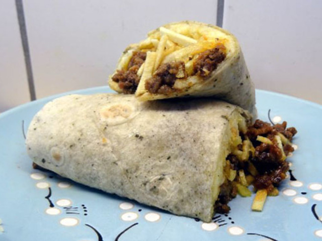

Sloppy Joe Wraps

Recipe Description
A delicious and more clean way to enjoy sloppy joes.
This recipe takes advantage of tomato soup and salsa to create a new take on sloppy joes and uses tortilla wraps to make the meal less sloppy than the name suggests.
Ingredients
- 1LB Ground Beef
- Season Salt
- Black Pepper
- Cayenne Pepper
- 1 can Campbell's Tomato Soup
- Half a jar of Tostito's Salsa
- Tortilla Wraps
- Shredded Cheddar Cheese
Steps
- Place ground beef in a frying pan and add Season Salt, Black Pepper, and Cayenne Pepper.
- Cook ground beef until brown.
- Add can of Tomato Soup and cook until soup is glazing to the bottom of the pan.
- Add salsa and cook until glazing to the bottom of the pan.
- Remove from heat and scrape glazing off the bottom of the pan.
- Place beef and cheese on tortilla and wrap.